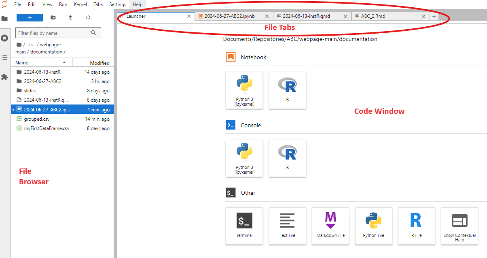

The following tutorials show how to create a package environment and do some basic analysis in both R and python.
R Tutorial
In this tutorial we show how to create a project in RStudio and to manage all the necessary packages within a package environment created with renv. Using a package environment ensures you always use the same packages at specific versions inside the project, making the analysis reproducible.
Using project management in RStudio offers several advantages in terms of organisation and collaboration (to mention a few). Each project has its own working directory, Rstudio settings for the workspace, command history, and files with code. Read more here
Another advantage is that a project facilitates collaboration by maintaining a consistent environment across different team members (and remember that it’s good practice to use the same version of R throughout a project, check your version using the R.version()-function)
Project creation and management in RStudio
1. Open RStudioo, go to the menu and select File –> New Project...
2. Choose New Directory –> New Project (similarly you can create a project in an existing folder). Note that there is a third version including version control: here you can also control the history of all changes in the project files using version control tools (such as Git), but we are not talking about this for now.
3. Name your project and select the directory where you want to save it. Click on use renv for this project. Finally click Create Project
4. The project is now established. You can see some files are automatically created into the project directory.
Note
When you want to open your project the next time, you can either: - Open the project by double-clicking on the file in Windows Explorer/OSX Finder (e.g. MyProject.Rproj) - Open RStudio, go to the menu and select File –> Open Project and browser to find and select the project that you want to open - Open RStudio, go to the menu, select File –> Recent Projects, and select the project from the list of most recently opened projects
Some of the things making it nice to work in projects in RStudio are that when a project is opened:
A new R session (process) is started
The .RData file (saved data) in the project’s main directory is loaded
The .Rhistory file (command history) in the project’s main directory is loaded
The current working directory is set to the project directory
Packages in the environment are loaded
And other settings are restored to where they were the last time the project was closed
Project structure
A clean and organised project structure is super important. To ensure this, a good practice is to create subfolders like Data, Scripts, Output, and Docs within your project directory. You can do all this in the RStudio browser (bottom-right corner).
Using the renv package to manage a project’s environment
The renv package allows you to create isolated and reproducible environments for your R projects, ensuring that the exact package versions and dependencies are used, ultimately facilitating reproducibility and collaboration. For an extended description, read more here. Dependencies are packages on which others rely on to work.
Key features:
Each project can have its own set of R packages and versions
Ensures that the same package versions are used each time the project is run
Manages dependencies by automatically tracking the packages used in your project and their versions
Ensures the same environment setup when sharing projects with collaborators
tracking installed packages with renv
You do not need much to track all your packages. Simply create your files with R code and save them inside your project folder. While you code, you will necessarily install some packages which you need to create your program.
When you are done, run in the Rstudio console the program renv::snapshot() - this will update the file renv.lock with a list of all installed packages and dependencies (open the file to see how it looks like). All the packages are installed inside the renv folder and will be loaded from there.
Note that renv will track only packages that are used in your files with code - other packages which are installed but not used will not be tracked. Pretty smart!
1. Now, try to install dplyr and ggplot2 using
install.packages(c("dplyr", "ggplot2"))
in the RStudio console.
2. Snapshot the environment by running
renv::snapshot()
Have a look at the file renv.lock to see how it looks like. It should not show any package beyond renv: the file is updated only with packages used in the scripts you have in the project folder, so we will have to run the snapshot at the end of the tutorial where we use the packages!
Sharing projects
When sharing your project, include the renv.lock and renv directory in the project folder. You can also include just the file renv.lock. Other users can use renv::activate() to activate the environment, and also renv::restore() if they need to install the packages (in case the folder renv is not provided).
Note that if you provide the folder renv, this must be used in the same operating system. It might not be possible to use the environment folder create, for example, in Linux, on a windows or mac computer.
Kickstart dplyr analysis
The dplyr package is part of the tidyverse, a set of packages all based on consistent and intuitive syntax/grammar for data manipulation, where the fundamental data structure is the data frame. dplyr is one of the most popular packages for data manipulation.
We already install the package in our environment and it is ready to use. You can use the following commands in the Console, or create an R script or an R markdown document.
Create a small dataset with gene expressions and some patient meta data:
You can establish any filter based on the columns or combination of them. Filtering only on age of at least 50yo and rate of Gene1 and Gene2 larger than 2 is as below
Now we introduce the pipe symbol %>%. This combines with the dplyr functions such that subsequent operations between pipes reflect the way we enunciate them orally. For example: The dataframe data must be grouped by treatment and for each group summarise the Gene1 by its average. Arrange the result by the average of Gene1 in descending order.
dataframes and tibbles
Note how the output is no longer a dataframe, but a tibble. A tibble is a more “modern” version of the dataframe which is used in the tidyverse packages. You cannot really notice much difference when using them. To ensure you are using a tibble , you can always define a dataframe and transform it into a tibble using the command as_tibble. Read more about tibbles at this link.
To save your table in the Output folder as csv file:
write.csv(grouped_data, "Output/grouped.csv")
Now, if you ran all the commands in your console, create a new R script (File -> New -> R Script) and paste all the code used until now, then save it. If you instead used a Script or Markdown, save it. Move the script/markdown file into the Code folder, so you keep the files organized! Now run again
renv::snapshot()
You should be requested for permission to write some packages into renv.lock. Accept and look into the file, which not should be different and including new package names.
wrap up
Now you know how to manage a project in RStudio and the packages you need. dplyr and the other packages pivoting around tidyverse have a plethora of useful functionalities. A good place to start from is to use a table you need for your own work, and try out various things you can do. Some good resources for training are available as links below:
We will first install Anaconda, which allows you to create environments (isolated group of packages to run a project and ensure reproducibility), and run softwares to code interactively (we will use one called jupyterlab).
Install Anaconda and create an environment
1. Download Anaconda from the download page. Uso also the Sign In button of the webpage to create an account: this will enable you to use an AI-chat showing up while you code, and which can help you doing a lot of things.
Note
This guide has been made with Windows, and works similarly with MacOS. For Linux, you will download a file with .sh extension, which you can execute in the command line with bash installer.sh.
2. Once Anaconda is installed, open Anaconda Navigator. Log into Anaconda Cloud from the software, and eventually update Anaconda Navigator if asked.
3. Your initial window would look similarly as below. What you can see is a suite of softwares. Some of those are installed and they are found in the anaconda environment called base (root), as shown in the red circle. It is good advice not to modify the base environment, because Anaconda itself is installed into it!
4. We create a new environment with only few needed packages for our tutorial. Click on Environments on the toolbar (red circle). You can see the base (root) environment and a long list of packages it contains. Click on Create (blue circle).
5. In the appearing window choose a name for the environment and select Python. Then click on Create. It takes a bit of time to create the environment.
6. Select the environment. It will load a few packages (just Python and its essential dependencies), but we want to install new ones. Open the filtering menu (green circle above) and choose All to view all existing packages. Select the following packages: pandas, numpy, jupyterlab, anaconda-toolbox, seaborn and click Apply. A list of dependencies will be shown, and you have to accept that to continue. Wait for the installations to go through.
7. Now select the environment again. There are much more packages installed and ready to use. Click on Home in the toolbar: you will see the softwares installed in your environment (choose Installed Application from the dropdown menu to see only the installed ones).
wrap up
You can create various environments to keep specific versions of packages constant in separate data science projects. This ensures a high degree of reproducibility in your projects.
An environment can include the softwares needed to code (RStudio, jupyterLab are the most famous, but also others can be installed).
We will use the created environment to run some basic commands in python.
Python basics
Here we look at the python basics: variables, arrays and dataframes. We will immediately work with two packages: numpy and pandas, which make the use of arrays and dataframes very flexible.
JupyterLab
Launch jupyterlab from the Anaconda Home, using the environment ABC2. You should be able to see Jupyterlab opened in your internet browser. It will look similar to the one below: it has a file browser, can show the opened files on different tabs, and has a coding window where the opened file is shown. When you first open jupyterlab you will instead see a Launcher, which gives you a choice for all the available things to do, usually Notebooks, Console, or Other, with related available languages.

You do not create projects in JupyterLab, you simply create folders instead.
Use the browser to create a folder wherever you prefere, and organize it into subfolders: Code, Output, Data, Scripts. You can use the small button above the browser to create a folder, or simply the right-click options.
Again with a right click, create a notebook inside the Code folder
When asked to choose a kernel, select python 3. A kernel includes the programming language and its packages as we installed them into the environment using Anaconda.
{fig-align=“center”, width=300px}
A notebook looks like this:
The gray area is a code cell, where you can write code. Select the left border out of a cell to
transform it into a Markdown cell where you can write text: key M of your keyboard
add a cell below: key B
run the cell and add one below: keys Shift+Enter
Tip
A notebook looks a lot like a text file. When you open it, it will show all results and images from your code! You can share it to anyone without the need to run the code again for the recipient, if it is needed to simply show some results.
The webpage you are reading now has been created with a notebook!
Let’s turn things into practice now. Transform the first cell into markdown (key M) and write a title with
## ABC2 is cool
and press Shift+Enter. You will get a new cell below, and the text will be formatted from Markdown.
Now we write some code in the new cell and press Shift+Enter to execute:
import numpy as npimport pandas as pdprint("Hello ABC")x = np.arange(1,10)y = x**2print("x")print(x)print("y")print(y)
The little number on the left shows how many code steps you have been running so far. The code imports relevant libraries and shortens their name with np and pd, which makes coding easier and compact. Then we use the library np to define an array of numbers from 1 to 10, and we square this array assigning it to y. Finally we print the two arrays.
All variables are assigned with the = symbol and you can do all arithmetic operations:
print(2+3)print(9*2)print(5**2)
5
18
25
Pandas dataframes
we procees looking into a small dataframe. Let’s create one using the pandas library
There are lots of summary statistics already implemented in python. Below we calculate mean, median and standard deviation for the column Gene1 of the data frame and then we print them.
x = data.Gene1meanG1 = np.mean(x)medianG1 = np.median(x)sdG1 = np.std(x)print("mean, median and sd:")[meanG1, medianG1, sdG1]
This was neat! Can you try to calculate the cumulative sum of the difference between Gene1 and Gene2?
Answer
The answer is
x = data.Gene1 - data.Gene2csum = np.cumsum(x)print("cumulative sum of Gene1 - Gene2:")print(csum)
Functions
Although python and the packages you can find have almost everything you will need, sometimes you might need to define your own function. The syntax to do it is very easy: you define a function name, which then you will be able to use it. Below, there is a function taking an argument (arg1) and multiplying it by 5. The output needs to be explicit through the return() function.
def myFunction(arg1): res = arg1 *5return(res)
Such a function works if the argument is a number, but also if it is an array!
print("with a number only")print( myFunction(5) )print("with an array")print( myFunction(data.Gene1) )
with a number only
25
with an array
0 26.0
1 31.5
2 24.5
3 36.0
4 29.0
Name: Gene1, dtype: float64
Try to make a function that takes three vectors, plots the first against the sum of the second and third, and returns the sum of all three vectors. Use the plot command we applied previously for help.
Answer
The answer is
def simpleSumPlot(arg1, arg2, arg3): arg23 = arg2 + arg3 arg123 = arg1 + arg2 + arg3#plotting fig = sns.scatterplot(x = arg1, y = arg2) fig.set_title("Plot with my own function") figreturn(arg123)
Now you can try this on vectors of the same length. We can use the ones in our data frame!
 {fig-align=“center”, width=300px}
{fig-align=“center”, width=300px}